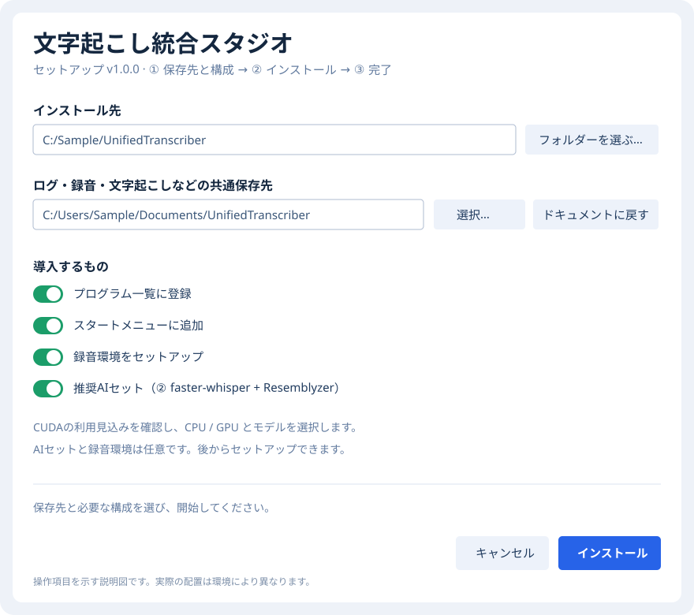
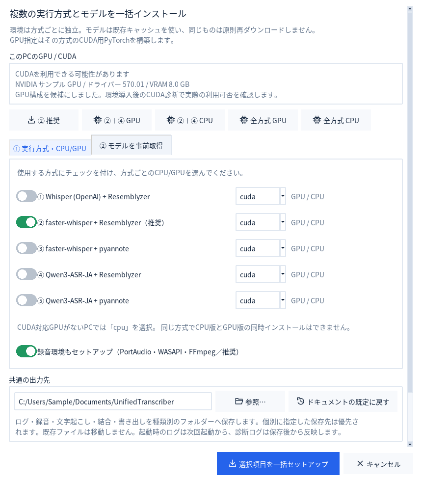
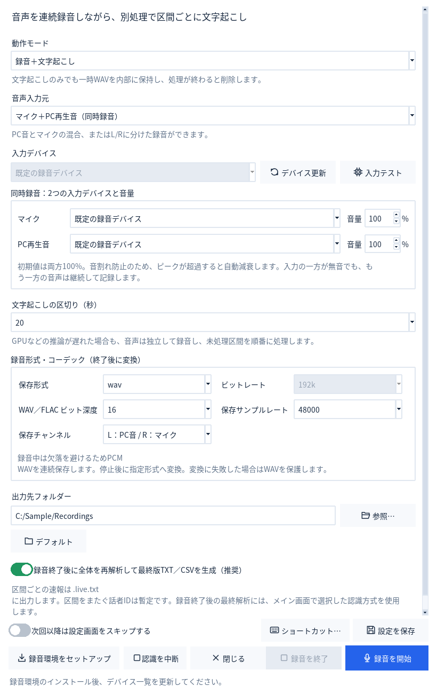
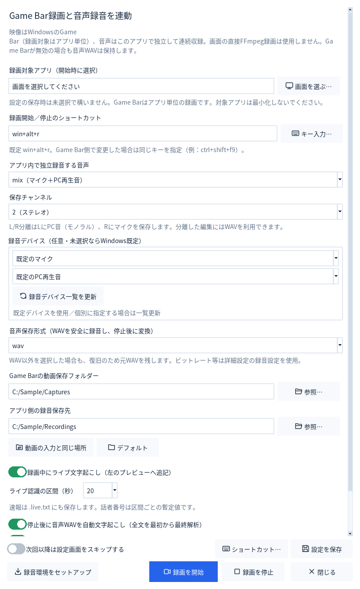
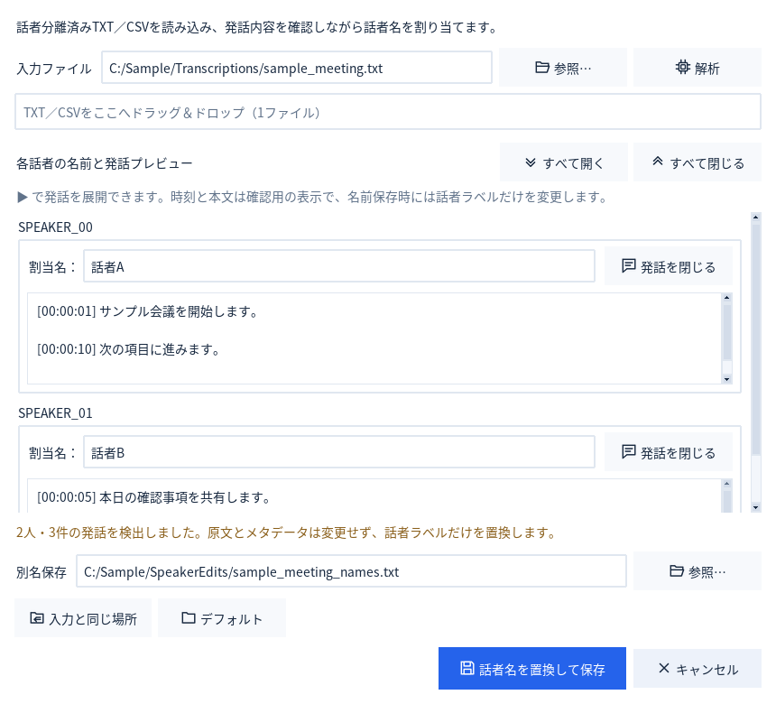
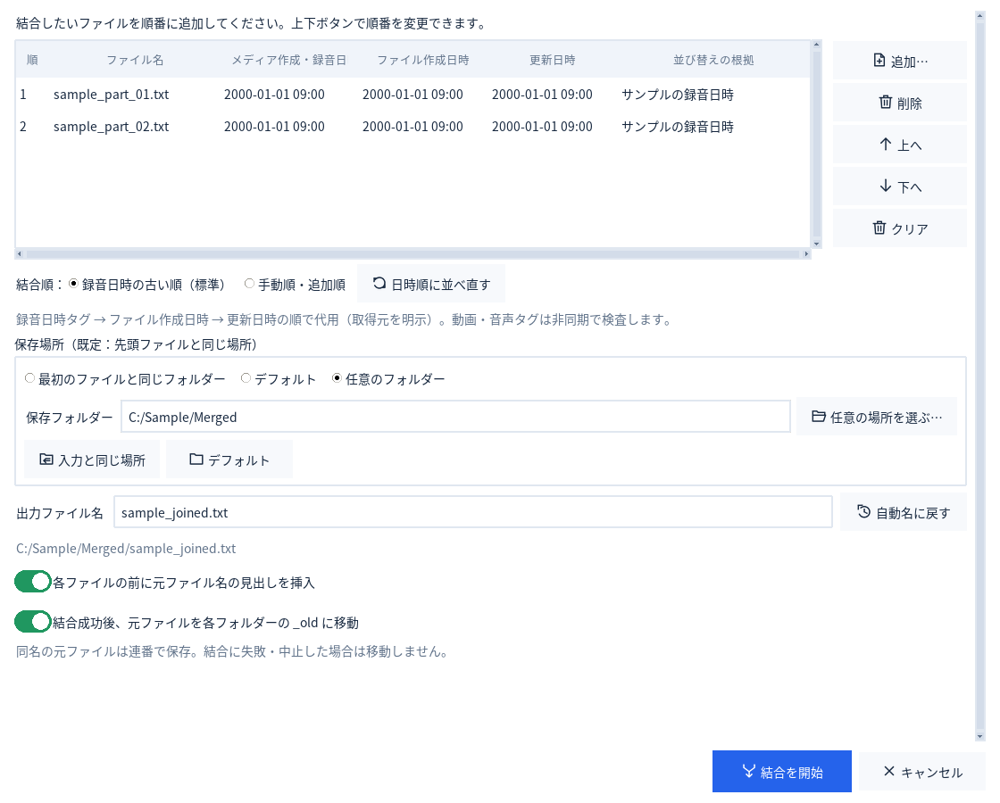
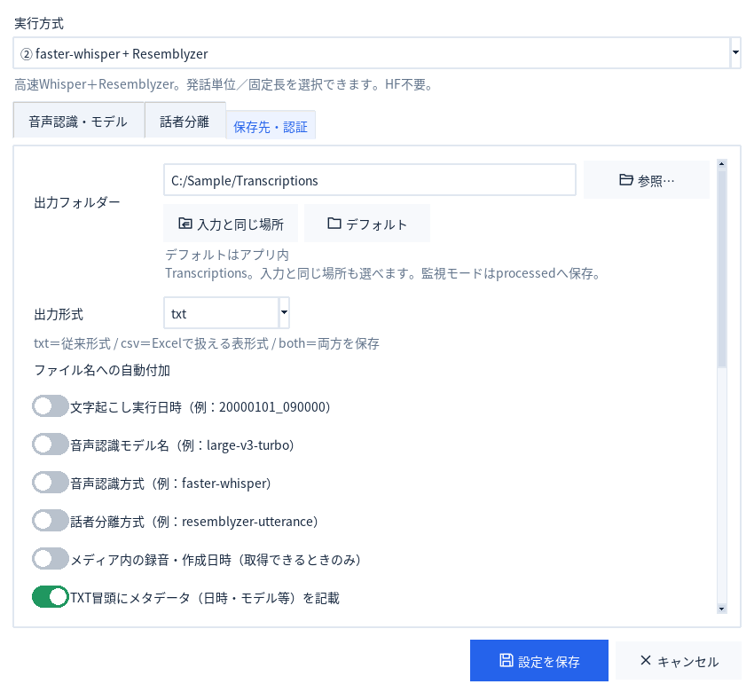
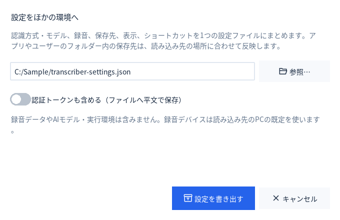
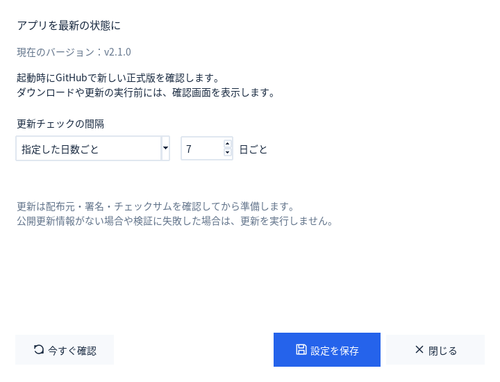
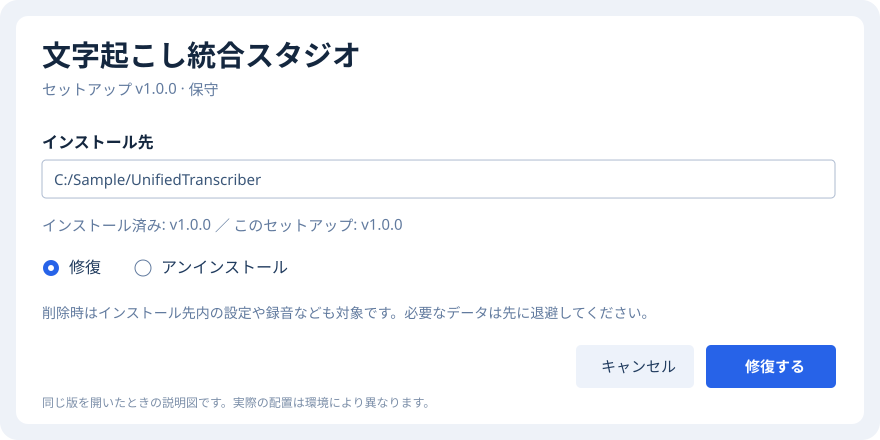

「コピー」でプレビュー全文をコピー
左のプレビューの「コピー」は、スクロールで隠れた部分もまとめてコピーします。確定した結果を保管・編集するときは、保存されたTXT／CSVを使います。
QUICK START · WINDOWS
最初の導入から、録音・文字起こし・話者名の仕上げまで。よく使う操作を、実際の画面と一緒に案内します。
最初にダウンロードするのは Unified_Transcriber_Setup_v1.0.0.exe です。保存したexeを開き、画面の案内に沿って進めます。PythonやAIライブラリが未導入のPCでも、同梱ランタイムで本体を起動できます。完了後の自動起動も選べます。
アプリ・Python・追加環境・モデルを置くフォルダーです。
既定はドキュメント内のUnifiedTranscriberです。別のフォルダーにも変更でき、用途別のサブフォルダーを作成します。
プログラム一覧への登録、スタートメニューへの追加、録音環境、推奨AIセット（②）を選択します。AIセットは後から追加できます。
NVIDIA GPU・ドライバーによる利用の見込みを表示します。CPU／GPUと、モデル（既定はlarge-v3-turbo）を選びます。実際のCUDA利用は環境導入後の診断で確認してください。追加取得にはインターネットと十分な空き容量が必要です。
新規設定の認識方式は「② faster-whisper + Resemblyzer（推奨）」です。最初は数十秒の録音で、保存先と認識結果を確認しましょう。既存設定では選択済みの方式を保持します。

| 導入時の選択 | 選ぶとできること | 後から変更 |
|---|---|---|
| プログラム一覧に登録 | Windowsのアプリ一覧から見つけやすくします。 | セットアップexe |
| スタートメニューに追加 | アイコンからアプリを起動できます。 | セットアップexe |
| 録音環境をセットアップ | マイク・PC音の録音を準備します。 | 「録音・録画」のセットアップ |
| 推奨AIセット（②） | ②の認識方式と選んだモデルで文字起こしを始められます。 | 「設定・診断」の一括セットアップ |
追加の録音環境やAIモデルの取得に失敗しても、導入済みのアプリは残ります。接続や空き容量を確認し、アプリ内のセットアップから再試行できます。
既存のインストールがある場合インストール済みの版がこのセットアップより新しい番号の場合は通常の更新として導入できません。設定・モデル・録音・結果を別の場所へ退避し、別フォルダーへの導入を検討してください。インストール先内のデータを削除する前に必ず退避してください。古い版から更新した後は、「録音・録画 → 取り込み・環境 → 録音・録画のセットアップ…」を再実行して、音声・動画処理ツールも更新してください。利用中の認識方式を一括セットアップし直す方法でも更新できます。設定やモデルは保持します。未導入の案内が出た場合も同じ操作で修復します。
GUI・従来方式用のPython 3.11.18と、方式②・録音用のPython 3.14.10（MLRuntime）を同梱します。利用者がグローバルなPythonや依存ライブラリを先に導入する必要はありません。
方式②・録音は対応するWindows wheelの構成に更新しています。Python 3.15は必要なwheelがそろっていないため、現時点では対応対象外です。①・③・④・⑤は従来の互換構成を維持します。
旧版の方式②・録音環境は、新しいPythonで別環境を構築・検査してから切り替えます。構築に失敗した場合は旧環境を保持します。同じPython版の既存環境は再利用して依存関係を更新します。設定・モデルキャッシュ・録音・結果は環境の置き換え対象外です。実際の確認範囲は検証資料を参照してください。
旧版から方式②を使っている方へ本体の更新後に、一括セットアップで方式②を再実行し、認識環境も更新してください。他の従来方式にはモデルの読み込みに関する確認事項が残ります。信頼できる配布元のモデルを使用し、外部から受け取った.pt／.pth／.ckptを持ち込まないでください。対象と制約を確認する
「設定・診断 → 環境の準備・確認 → 一括セットアップ…」で、追加したい方式とモデルを選びます。録音だけを使う場合は、音声認識モデルの導入を後回しにできます。

上から「準備する」「ファイルを選ぶ」「結果を見る」「開始する」の順に並んでいます。アプリ TOP の「画面付き操作ガイド」から、このガイドを直接開けます（下の画面例は追加前のものです）。画像上の番号を押すと、対応する説明へ移動できます。
1録音・Game Bar
すぐ開始するボタン。設定を開きたいときはShift＋クリック。
2認識方式・詳細設定
方式、モデル、CPU/GPU、保存先を確認します。
3ファイル一覧（キュー）
追加した順に処理します。完了した項目から結果を開けます。
4認識プレビュー
認識した文章を表示。「コピー」で全文をコピーします。
5詳細ログ
進捗やエラーの理由を確認します。別ウィンドウでも開けます。
6開始・停止
通常の文字起こしを開始します。「すべて停止」は上部にあります。
メニューはクリックすると下へ展開します。項目が多い場合は、中カテゴリを開いて操作を選びます。画面が狭いときは、スクロールして下部の項目を確認できます。
メイン画面 → ファイルを追加… → 文字起こしを開始
「ファイルを追加…」から選ぶか、ファイルを一覧へドラッグ＆ドロップします。複数ファイルをまとめて追加できます。フォルダーの追加は「追加メニュー」から選びます。
方式を選び「詳細設定…」を開きます。TXT、CSV、両方から選べます。ファイルごとに変えるときは、一覧から選択して「選択項目」を開きます。
認識文は左、進捗や詳細は右へ表示されます。次のファイルの認識が始まると、プレビューは切り替わります。
結果画面から「結果の保存先を開く」「元ファイルの場所を開く」「この結果の話者名を設定」を選べます。保存先の列をダブルクリックすると、そのフォルダーを直接開きます。
左のプレビューの「コピー」は、スクロールで隠れた部分もまとめてコピーします。確定した結果を保管・編集するときは、保存されたTXT／CSVを使います。
「選択項目」から既存出力の扱いを指定できます。別名保存なら元の結果を残せます。一覧のDeleteはキューから外す操作で、元ファイルは削除しません。
MP4 / MOV / MKV / AVI / MP3 / WAV / M4A / FLAC / AAC / WMAに対応します。ファイルに音声が含まれていない場合や、破損している場合は認識できません。
TOPの「リアルタイム録音」／「録音・録画 → 録音・録画を開始」
マイク、PC再生音、両方から選びます。「デバイス更新」で機器を選び、「入力テスト」で音が入ることを確認します。
録音中にも文字を見たいときは「録音＋文字起こし」。録音中の負荷を抑えて後から認識したいときは「録音のみ」にして、終了後の文字起こしをONにします。
ライブ結果は左のプレビューへ追記されます。10 / 20 / 30 / 60秒の区間から選べます。
録音を保存し、ONにした終了後の文字起こしを続けます。全文の再解析ではプレビューを一度クリアし、録音の先頭から表示し直します。

| やりたいこと | 動作モード | 停止後の文字起こし |
|---|---|---|
| 録音しながら認識 | 録音＋文字起こし | 全文の最終版もほしいときはON |
| 録音後だけ認識 | 録音のみ | ON |
| 音声だけを保存 | 録音のみ | OFF |
| 文章だけを残す | 文字起こしのみ | 処理中の一時音声は終了後に削除 |
ライブの話者番号は暫定です区間が変わると同じ番号でも別の人物を表す場合があります。全文の最終解析では、録音全体を使って話者分離をやり直します。
TOPの「Game Bar連動」／「録音・録画 → 録音・録画を開始」
録画したいアプリがGame Barで録画できることを確認します。録画開始／停止のショートカットは、本アプリとWindows側で同じ組み合わせにします。
一覧のプレビューで、録画したいウィンドウを確認します。対象アプリは毎回選択します。設定だけ保存する場合、対象の指定は不要です。
録画中に文章を見たい場合は「録画中にライブ文字起こし」をONにします。録画後の全文認識と、別録音音声を同期したMP4の作成は、個別に選べます。
音声は本アプリでも独立して保存します。終了後は、Game BarのMP4と音声、文字起こし結果を確認します。

TOPとメニューの使い分け初回は必ず設定画面を開きます。「次回以降は設定画面をスキップする」をONにすると、TOPは前回の収録設定を使います。Shiftを押しながらTOPをクリックするか、メニューから開くと毎回設定できます。スキップ中でも録画対象だけは毎回選びます。
Game BarはWindowsデスクトップや一部のアプリを録画できません。まずWindows側だけで短い録画を試してください。同期は開始時刻に基づく概算です。収録済みMP4を「録音・録画 → 取り込み・環境 → 標準録画を取り込み・文字起こし…」へ入れると、別音声のミックス／置き換えと開始位置の補正ができます。
完了したキューをダブルクリック → この結果の話者名を設定
または「ツール → 変換・話者名 → 話者名を設定…」
完了した結果から開くと、そのファイルが選択されます。保存済みのファイルは「参照…」で選びます。
「発話を表示」や「すべて開く」で、誰の発言かを確認します。名前の自動特定はしないため、確認して割り当てます。
元のファイルを残し、別名で保存します。本文中の同じ文字や発言内容は変更しません。

メイン画面の「完了後に話者名設定」をONにすると、文字起こし完了後に編集画面が開きます。複数結果がある場合は順番に表示します。
「ツール → 結合・音声の抽出」／「ツール → 変換・話者名」
TXT結合、CSV結合、音声結合から選びます。音声結合には動画も入力でき、音声だけを取り出して結合できます。
「↑ 上へ」「↓ 下へ」で並べ替えます。手動の順番を保つときは「手動順・追加順」を選びます。
「結合成功後、元ファイルを各フォルダーの _old に移動」は初期OFFです。ONの場合、結合結果を保存できた後に元ファイルを退避します。

音声の結合画面で「結合後に自動的に文字起こしする」をONにします。メイン画面の認識設定を使います。結合した音声は、認識に失敗しても残ります。
発話の時刻・話者・本文を表形式で扱えます。情報保持CSVでは元の行順、見出し、空行を補助列に保存します。TXTへ戻す予定なら、補助列を削除しないでください。
外部から受け取ったCSVをExcelで開くときダブルクリックではなく、Excelの「データ → テキストまたはCSVから」で読み込み、本文・話者・ファイル名の列を文字列として指定してください。文章の先頭が=などの場合、Excelが数式と解釈することがあります。外部リンクや実行を促す警告を承認しないでください。
退避はファイルの移動です退避した元ファイルは、各入力フォルダーの_oldにあります。別のソフトから参照している場合は、その参照先も変わります。結合が失敗・中止した場合は移動しません。
メイン画面の「単語辞書…」または「設定・診断 → 操作・設定 → 認識用の単語辞書…」から設定します。写真の画面例にはこのボタンはまだ表示されていません。
初期状態ではオフです。
「表記」に例として「青空株式会社」を入力し、「単語を追加」を押します。読み方は辞書管理用で、認識エンジンには送られません。共通グループは常に使用され、用途別グループは使うものを選びます。
通常のファイルとライブ認識でヒントとして使います。結果の文章の自動置換はしません。
ヒントは正しい認識を保証しません。登録上限は1,000語・50グループ、単語・読み方は各120文字です。実際に使うヒントの長さにも上限があるため、一部が省略される場合は辞書画面またはログで確認します。「、」は単語の区切りとして使うため登録できません。辞書はローカルに保存され、辞書画面から単体で読み込み・書き出しでき、設定全体の移行にも含まれます。
「入力と同じ場所」は元ファイルのフォルダー、「デフォルト」は共通保存先の用途別フォルダーです。共通保存先の既定は、ドキュメント内のUnifiedTranscriberです。OneDriveや別ドライブへ移動済みのドキュメントも、その登録先を使います。
共通保存先は本体のセットアップ、一括セットアップ、方式別セットアップ、詳細設定の保存先設定から変更できます。既存のファイルは自動移動しません。個別に設定した保存先と「入力と同じ場所」は優先されます。結合では先頭ファイルの場所を使います。

| 保存するもの | 共通保存先内のフォルダー |
|---|---|
| 文字起こし・形式変換 | Transcriptions |
| 録音・同期後の動画 | Recordings |
| 結合結果 | Merged |
| 話者名の編集結果 | SpeakerEdits |
| 起動・処理・追加セットアップのログ | Logs |
| 設定JSON・診断ZIPの書き出し | Exports |
設定はインストール先のData/settings.json、Python・追加環境・モデルキャッシュもインストール先に置きます。旧版のログや録音は元の場所に残ります。共通保存先を変更したとき、起動時から開いているgui_startup.logは次回起動から切り替わります。
Game Barが作る元のMP4はWindows側で指定した場所に保存されます。入力ファイルのないリアルタイム録音では、録音先フォルダーを指定します。
「設定・診断 → 操作・設定 → 設定を書き出す…」でJSONへ保存します。移行先では「設定を読み込む…」を選びます。アプリ内・ユーザーフォルダー内の保存先は、読み込み先に合わせて反映します。

設定JSONを共有するとき「認証トークンも含める」をONにしたJSONには、トークンが平文で入ります。共有・GitHubへの登録はしないでください。AIモデル、実行環境、録音データは設定JSONへ含まれません。
TOP右上の3つのアイコンで切り替えます。左から太陽＝ライト、モニター＝デバイス設定に合わせる、月＝ダークです。選択欄や数値欄は、一度クリックしてフォーカスした後だけホイールで変更できます。
「設定・診断 → 操作・設定 → 録音・録画のショートカット…」で「キー入力」を選び、実際の組み合わせを押して登録します。WindowsやGame Barと重複するキーは、両側の設定を確認してください。
「設定・診断 → 操作・設定 → 自動起動・常駐の設定…」で、サインイン時の自動起動、最小化、閉じる操作のそれぞれを選択します。通知領域のアイコンをクリックすると画面が開き、右クリックから録音・停止・完全終了を選べます。アイコンが見えないときはWindowsの隠れたアイコンも確認してください。録音キーは別途設定してください。Game Barは毎回対象ウィンドウを選びます。
| キー | 操作 |
|---|---|
| Ctrl＋O | ファイルを追加 |
| Ctrl＋Enter | 文字起こしを開始 |
| 一覧内でCtrl＋A | 一覧の全項目を選択 |
| 一覧内でDelete | 選択項目をキューから外す（元ファイルは保持） |
| F1 | 使い方を開く |
設定・診断 → サポート → アプリの更新・確認間隔…
更新チェックの間隔を「起動するたび」「指定した日数ごと」「確認しない」から選びます。新しい版が見つかると確認画面が開きます。内容を確認して更新を選ぶと、セットアップexeをダウンロードして、検証後に更新へ進みます。

現在の作業を終えてから更新録音・文字起こしなどを終了し、保存できたことを確認してください。更新では既存の設定・モデル・録音・結果を引き継ぎます。ダウンロードや検証に失敗した場合は更新を実行せず、今のアプリを引き続き使えます。
| インストール済みの版 | 選べる操作 | 目的 |
|---|---|---|
| セットアップexeより古い | 更新 | 設定やデータを残して新しい版へ進む |
| 同じ版 | 修復／アンインストール／キャンセル | 不足したアプリファイルを直す、削除する、作業をやめる |
| より新しい版 | 新しい版の保守プログラムで修復／アンインストール／キャンセル | 古いセットアップによる上書きはしない |
インストール先にあるUnifiedTranscriberSetup.exeからも保守画面を開けます。古いセットアップexeから新しいアプリを上書きして、意図せず前の版へ戻すことはありません。
手動で更新・修復・アンインストールする場合は、先に通知領域アイコンの「アプリを終了」で完全に終了します。保守画面からアンインストールすると、このインストール先の自動起動登録も解除します。

アプリを終了し、保守画面で「アンインストール」を選びます。削除するフォルダーを確認して進めると、アプリと、そのフォルダー内に保存した設定・実行環境・モデル・出力を削除します。必要な録音や結果は、先に別のフォルダーへ退避してください。
フォルダーを手動で削除する場合アプリの実体はインストール先フォルダーにまとまっています。ただし、登録したプログラム一覧やショートカットの項目がWindows側に残ることがあります。これらも片付けるには、保守画面からアンインストールしてください。ドキュメントなどインストール先の外に保存した録音・結果・ログ、旧版がユーザーフォルダーへ保存した設定は、そのまま残ります。
既存のWindowsユーザー環境変数HF_TOKENや、他のアプリとも共有する外部モデルキャッシュは削除しません。不要になった認証情報の解除は、Windows側で別途行ってください。
更新の取得先はGitHubの公開リリースを想定しています。非公開リポジトリのままでは取得できない場合があります。更新のために個人のGitHubトークンをアプリへ埋め込むことはありません。
取得先、ファイルの種類・大きさ、ハッシュ値と配布元の証明を検査し、検証に成功した更新だけを実行します。認識した文章や録音を更新確認へ送ることはありません。検証で停止した場合は、表示された理由を確認してください。
録音・録画を保存し、設定された終了後の認識へ進みます。録音だけを終了して全文の認識を完成させたいときに使います。
待機中の認識、全文解析、結合、変換、監視、セットアップなどを中断します。終了処理が完了するまで待ってから次の操作へ進みます。
| 症状 | 最初に確認すること |
|---|---|
| 「未セットアップ」と出る | 使う認識方式の環境を導入し、その方式に対応するモデルを選んでください。録音環境と音声認識環境は別です。 |
| ドラッグ＆ドロップできない | 「ファイルを追加…」で代用できます。「設定・診断 → サポート → D&D 診断・修復…」も確認してください。 |
| 録音できない・音が入らない | デバイスを更新して入力テストを実行します。Windowsのマイクのアクセス許可や、PC音の再生先を確認してください。 |
| ライブ認識が遅れる | 文字起こしが録音より遅れると未処理区間がたまります。録音のみ＋停止後の認識へ変えるか、モデルとCPU/GPUを見直してください。 |
| 保存先がわからない | 完了したキューをダブルクリックして「結果の保存先を開く」。アプリ内の標準フォルダーも確認できます。 |
| 設定の読み込み後に録音できない | 移行先のPCで録音デバイスを選び直します。AIモデル・実行環境が未導入ならセットアップしてください。 |
| 更新できない | ネット接続、公開リリースの有無、検証エラーを確認します。失敗した更新は実行されません。通常の録音・文字起こしはそのまま使えます。 |
原因を調べたいときは、右側の詳細ログを確認します。「設定・診断 → ログ」から、ログフォルダーを開く／別ウィンドウで見る／ZIPへ保存する操作を選べます。通常はドキュメント内のUnifiedTranscriber/Logsです。
一括セットアップでは、pipなどの子処理の詳細も表示・記録します。アプリ内から実行した場合はsession_*.log、本体のセットアップ中ならsetup_*.logで最初のエラーを確認してください。FFmpegの一時的なアクセス拒否は再試行します。拒否が続く場合は他の録音・変換を終了し、表示されたフォルダーの書き込み権限を確認します。
ログにはファイルパス、デバイス名、認識結果が含まれる場合があります。誰かへ共有する前に内容を確認してください。